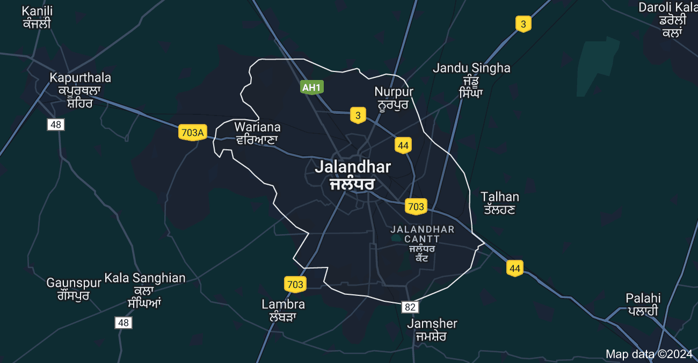
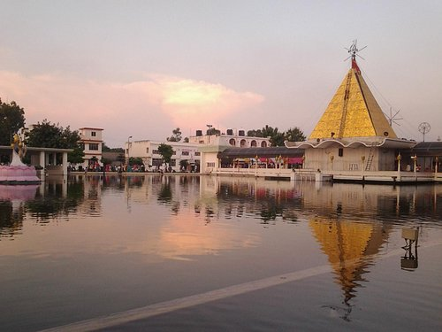
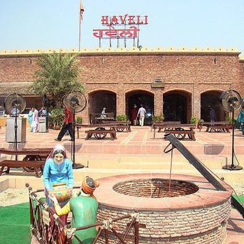
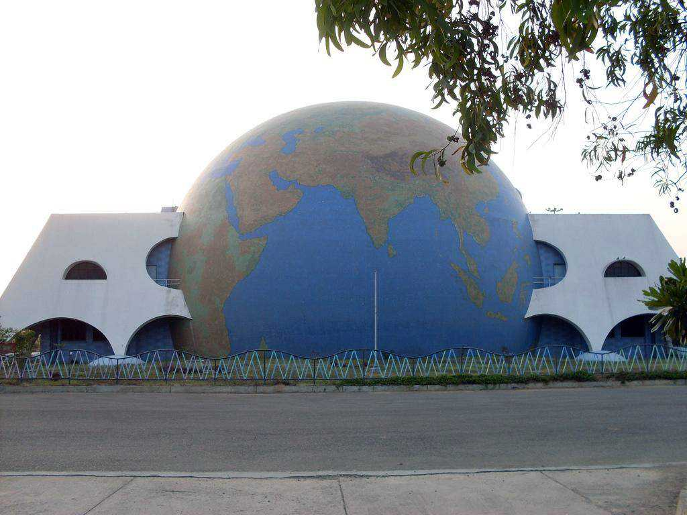
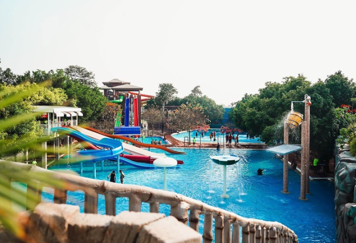

| Home | Amritsar | Jalandhar | Ludhiana |
|---|---|---|---|
| Welcome to Jalandhar | |||
|  |
History of JalandharThe city may be named after Jalandhara, a Nath Guru who was from here. The city was founded by Devasya Verma as mentioned in the Vedas. Other possibilities include that it was the capital of the kingdom of Lava, son of Rama or that the name derives from the vernacular term Jalandhar, meaning area inside the water, i.e., tract lying between the two rivers Satluj and Beas.[5] The whole of Punjab and the area of present Jalandhar District was part of the Indus Valley Civilization. Harappa and Mohenjo-daro are the sites where remains of the Indus Valley civilisation have been found extensively. The archaeological explorations made during recent years have pushed the ancient times of Jalandhar District of the Harappa period. Jalandhar was known as Prasthala during the Vedic period and it was the capital of the Trigarta Kingdom. |
||
| Famous Places | |||

Devi Talab Mandir |

Haveli |

Science City |

Wonderland |
| Created by Riya Arora ©2024 | |||